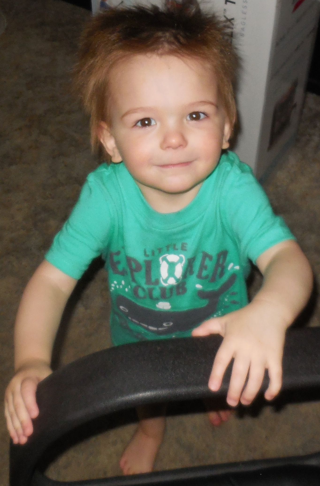

... I would go to visit my grandparents in Nevada. My grandfather was (and still is) into technology, so at a very young age I was able to experience things like the Commodore 64 and Intellivision. I always received the hand-me-down items from my family. I didn't have the most up-to-date items, but I did pretty good with what I had. Little did I know that these things would soon help shape my interests, and now my life.
Growing up, I always had an interest in Video Games. The influence of technology has always been apart of me. It wasn't until High School that I wanted to learn HTML. After I graduated, I found a job and life happened. Soon HTML took a back seat.
I started working at Dairy Queen. As far as starter jobs, I loved that job and made it all the way to Kitchen Manager. A fast food kitchen manager doesn't get paid very much though, so I started looking for other employment. I found myself at Pacific Crest Transformers and became friends with someone who would change my life forever. My friend Nathan was in the Oregon Army National Guard and he spent the better part of 2 years trying to get me to enlist.
After the birth of my son, Haiden, I started looking more for a long term solution for my life. I needed something like a College degree. With my friend badgering me with promises that the military would pay for College, I finally gave in, I joined the Guard. My area of expertise was IT, and I had a lot of fun and learned a lot.
In 2009, I deployed to Iraq. Iraq was very interesting, and after a whole year, mostly doing the IT for the Battalion, I came home. I decided to start using my GI Bill and go to College. In October of 2014, I completed 8 years of service and I got out of the military. Military life and family life don't mix very well. The people that manage to juggle both, I applaud you.
When it came to deciding what do major in, I thought back to what I've always done, Computer Science. I thought the easy way would be to get an actual degree in IT, but I thought back to High School and my HTML days. That thought made me smile. I decided that I wanted to really find out what makes a computer tick in terms of code, so I decided that programming was the way to go.
|  |
|---|